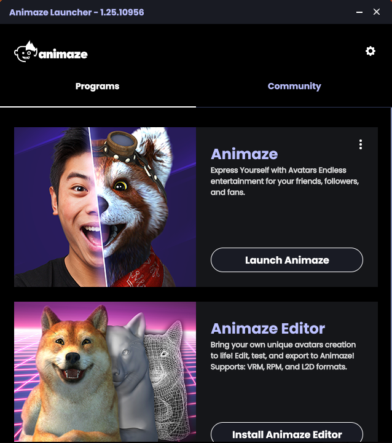
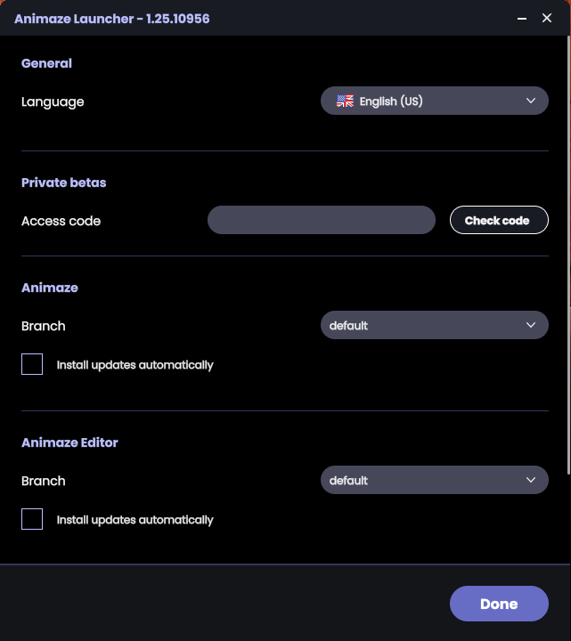
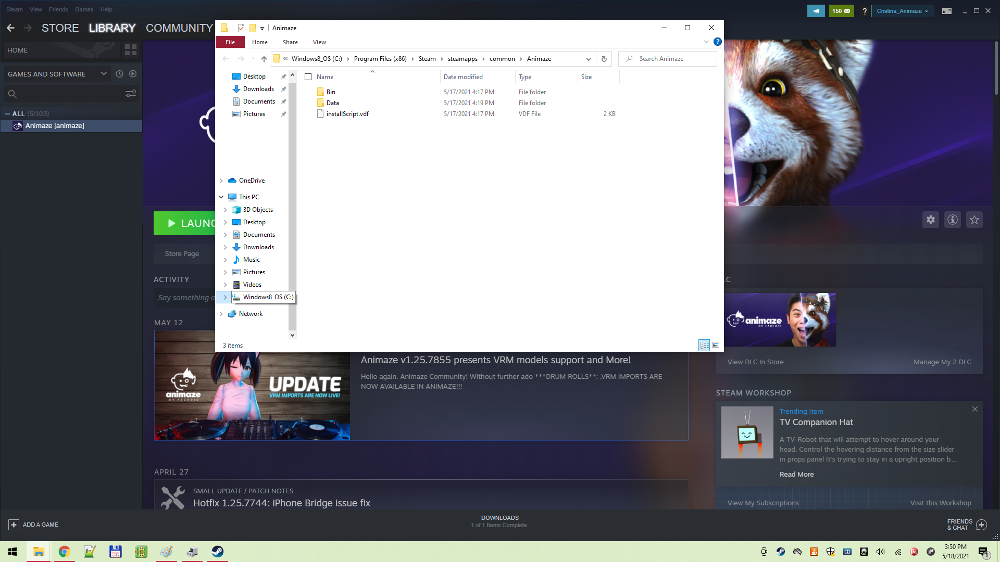
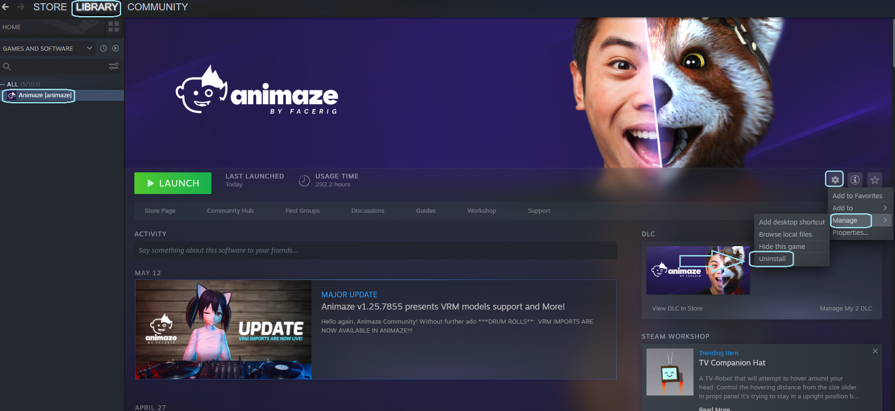
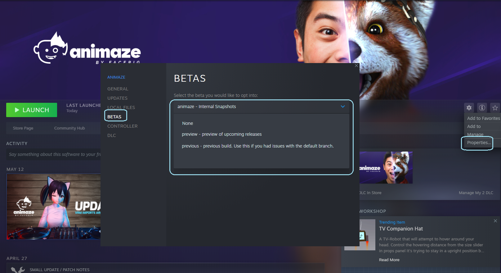

Animaze Desktop: How can I navigate the Animaze branches?
If you wish to change Animaze branches, the process will differ depending on the Animaze version you are using. So let's go through the two possible options: if you installed Animaze through animaze.us or if you installed Animaze through Steam.
1 Having installed Animaze through animaze.us
First of all, you need to go through the Animaze installer. This will become available when you decide on one of the versions of Animaze available here. Once this process is be done, the Animaze launcher will be available and, from here you will be able to enter its settings, in the right upper part of the screen.

In the launcher settings, the option of selecting a branch will become available.

2 Having installed Animaze through Steam.
Go to Steam Library
Look for Animaze and right-click on it
Go to Manage ->Browse Local Files and leave the window opened

Go back to Steam library → Animaze right-click ->Uninstall

Go to the local files and delete the files left there
TO MENTION: if you want to keep your imported custom avatar/backgrounds/light presets/emotes DO NOT delete the Resources folder ( :\SteamLibrary\steamapps\common\Animaze\Data\Resources ), but delete all remaining folders/files.
Go to Steam Library → Animaze right click → Properties
Click on Betas Tab
Enter your access code and click check code
In the “Select the beta you would like to opt into” select the “InsertNameHere branch”

Now select to install Animaze
We do not recommend that you switch between branches without doing a clean install, explained above, without a clean install you might experience technical issues.